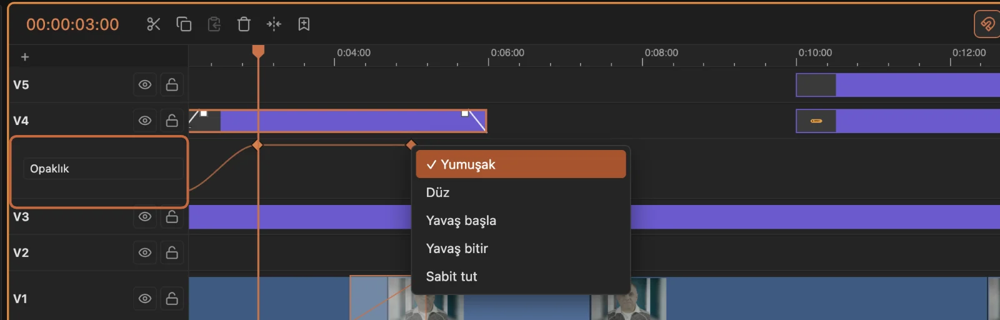

Hareket ve anahtar kareler
Anahtar kareler bir klibi zaman içinde değiştirir: büyür, kayar, kaybolur, döner. Hazır bir hareketle başla ya da her anahtar kareyi kendin koy.

Hazır hareketler
Bir klip seç ve Klip › Hareket (anahtar kare)'yi aç: Yavaşça Yakınlaş, Yavaşça Uzaklaş, Sola Kay, Sağa Kay. Hareketi Kaldır onu kaldırır.
Resim içinde resim gibi bir yerleşim seçiliyken hareket kapalıdır: hareket eklemek için yerleşimde Serbest'i seç.
Kendi anahtar karelerin
- İlkini koyOynatma kafasını getir, Boyut %, Yatay % ve Dikey %'yi ayarla ve Oynatma Kafasına Anahtar Kare Ekle'ye bas.
- Sonrakini koyOynatma kafasını ilerlet, değerleri değiştir, bir tane daha ekle. Anahtar kareler arasında klip birinden ötekine gider.
- Aralarında gezÖnceki anahtar kare ve Sonraki anahtar kare; Kaldır birini siler.
Anahtar kare şeritleri
Seçili klibin altındaki şeritleri göstermek için ⇧ K'ye bas: Boyut ve konum, Opaklık, Döndürme ve Kırpma. Anahtar kare eklemek için şeride Kalemle (P) tıkla; taşımak için sürükle.
Hareketin oraya nasıl varacağını seçmek için bir anahtar kareye sağ tıkla: Yumuşak, Düz, Yavaş başla, Yavaş bitir, Sabit tut ya da Özel eğri.